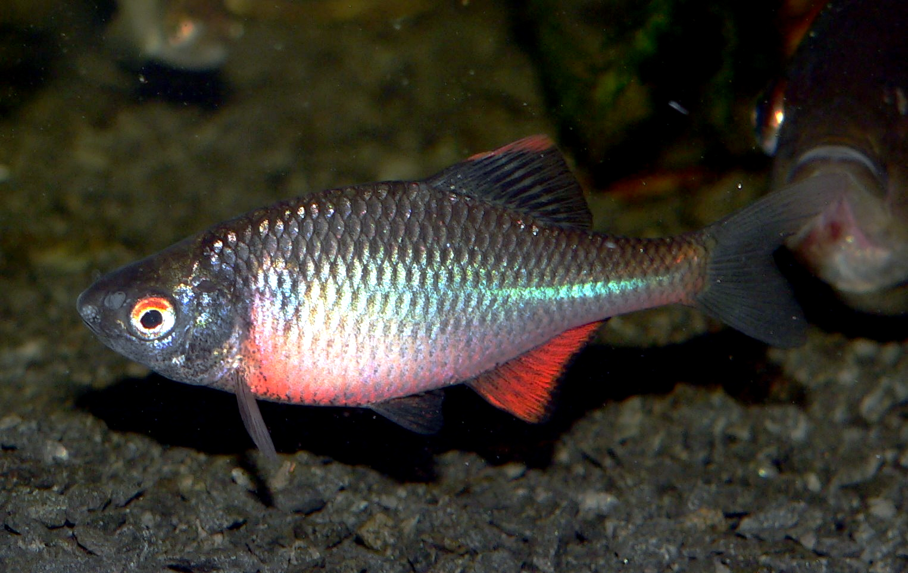

La Bouvière est une espèce de petits poissons d'eau douce de la famille des cyprinidés. Elle vit en Europe depuis le bassin du Rhône en France jusqu'à la Neva en Russie.

La Bouvière est une espèce de petits poissons d'eau douce de la famille des cyprinidés. Elle vit en Europe depuis le bassin du Rhône en France jusqu'à la Neva en Russie.
Il a été décrit à l'origine comme Rhodeus sericeus par Pallas en 1776.
Néanmoins, il a également été décrit par Bloch en 1782 comme Rhodeus amarus.
Actuellement, c'est ce dernier nom qui est accepté comme nom scientifique pour la Bouvière européenne. Dans son aire de répartition, c'est la seule espèce de son genre, Rhodeus.
C'est un vestige de l'époque où ces bouvières étaient réunies à l'espèce de Sibérie, Rhodeus sericeus.
Ce poisson atteint une taille de 5 à 6 cm (12 cm maximum). Il se trouve parmi les plantes dans des eaux peu profondes. Il se nourrit principalement de plantes, et, dans une moindre mesure, de vers, de crustacés, d'insectes et de larves.
Il entretient une relation de parasitisme réciproque avec la moule d'eau douce. C'est un exemple d'interactions durables entre deux espèces :
la bouvière pond ses œufs dans la moule, où les alevins se nourrissent du sang de celle-ci ;
la moule, ensuite, émet des larves appelées glochidies, qui s'attachent aux branchies ou à la peau de la bouvière, ou d'autres poissons d'eau douce, et croissent dans un kyste jusqu'à ce qu'ils soient prêts à éclore.